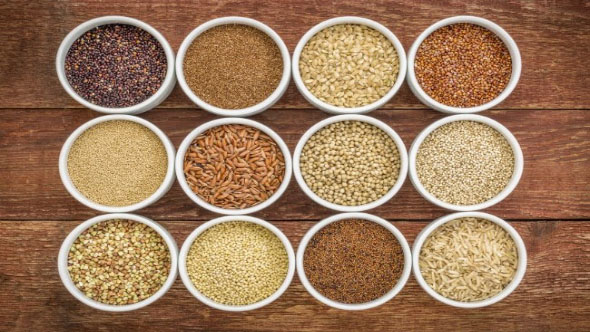
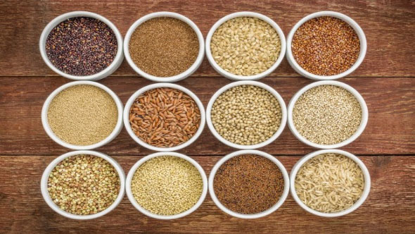
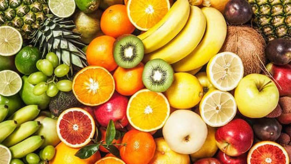
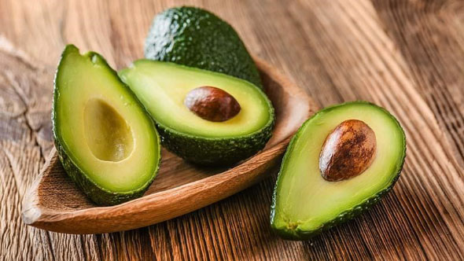
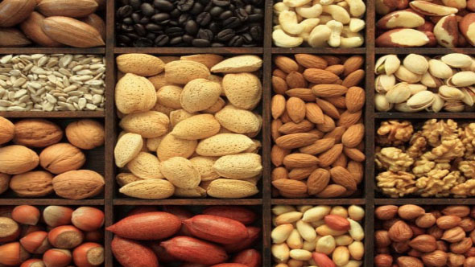
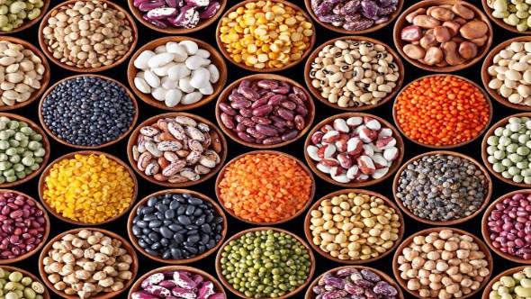
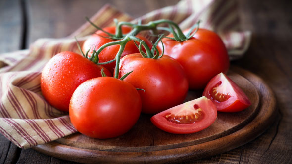
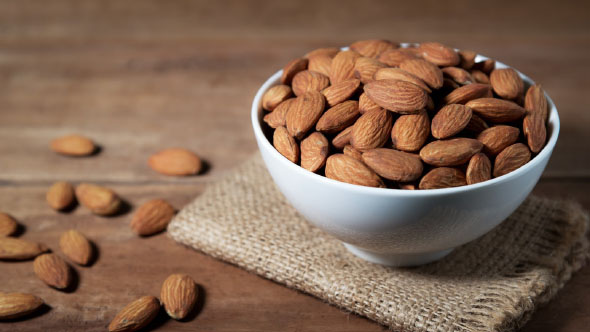
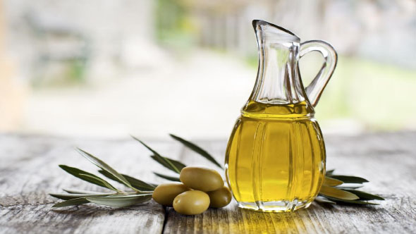

Healthy food
There are some foods that are good for heart health because they contain important nutrients such as vitamins, minerals, monounsaturated fats, and other elements that are good for heart health. Therefore, it is preferable to eat these foods when following a diet for heart patients, and these foods include :
 

Green vegetables Whole grains

Some fruits Avocado

Fatty fish and fish oil Nut

Beans Dark chocolate

Tomatoes Almonds

Garlic olive oil
Unhealthy food
There are also other foods that may harm the heart or increase risk factors for heart disease, so it is best to avoid them when following a diet for heart patients, and these foods include: :


Coconut. Fried vegetables.


Canned fruits in heavy syrup. Frozen fruits with added sugar.